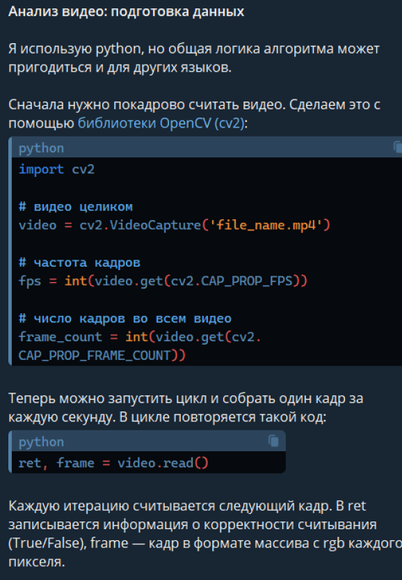
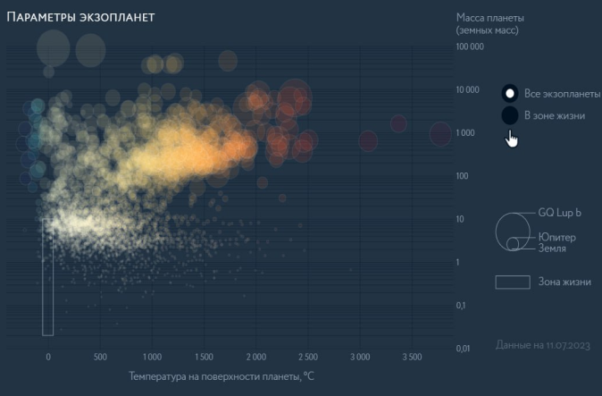
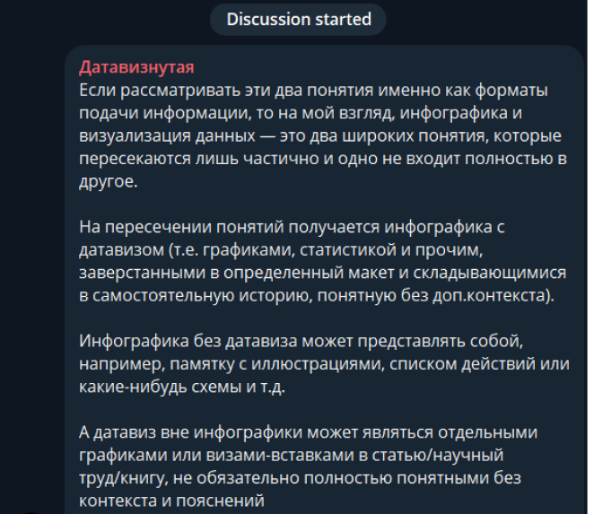
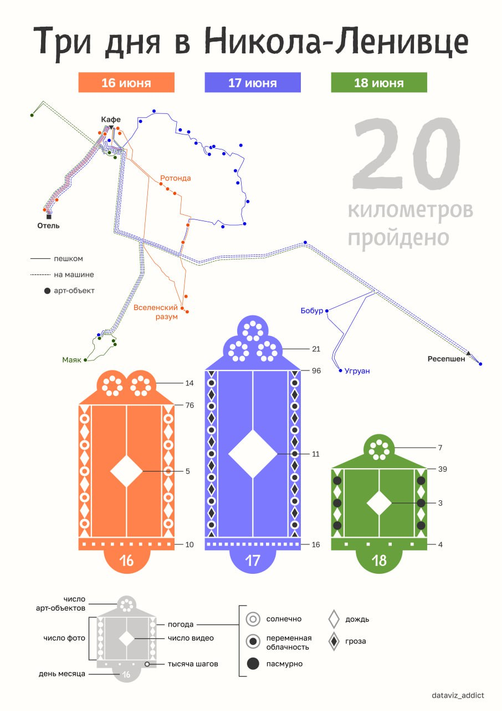

Софья Шандыбина, редактор инфографики ТАСС:
"Мы не занимаемся украшательством."
Как бы графики и диаграммы ни ассоциировались с чем-то сложным
и исследовательским, сами они наоборот упрощают информацию.
Настоящая же сложность – в их создании. От базы данных до
изящной визуализации информация проходит множество этапов:
фактчекинг, подбор подходящей графики, балансировка между
фактической точностью и визуальной выразительностью. О том, что
такое визуализация данных в СМИ как процесс и как результат
рассказывает редактор инфографики ТАСС Софья Шандыбина.
— Как Вы познакомились с визуализацией данных и и что в ней Вас так привлекло, что Вы решили связать с ней свою карьеру?
— С визуализацией данных я познакомилась во время обучения в вузе на втором курсе (ВШЭ, Факультет креативных индустрий,
ОП “Журналистика”). Сначала у нас был курс по анализу данных на питоне (Python, язык программирования, – Ред.), где мы
учились среди прочего строить графики в различных библиотеках. Уже тогда я поняла, что мне интересна работа с алгоритмами.
Затем у нас был курс по дата-сторителлингу с Андреем Дорожным и курс по визуализации данных с Алексеем Новичковым (он как
раз собрал студию инфографики ТАСС в 2016 году).
В датавизе меня привлекла возможность работы с визуальным контентом,
который всегда меня интересовал (в качестве хобби фотографирую, рисую
и т.д.). Также работа с медиаконтентом, основанным на данных, показалась
мне более глубокой, чем написание текстов. Кроме того, хотелось продолжать
использовать питон, т.к. меня заворожила работа с алгоритмами и возможность
получить конкретный четкий результат (либо получилось решить задачу, либо нет),
а не продукт, качество которого во многом зависит от субъективного восприятия
и оценки. Датавиз для меня открылся как идеальное сочетание технического и
гуманитарного: есть и задачи, в которых нужно что-то посчитать, продумать
четкий алгоритм, и задачи, для выполнения которых нужен творческий подход
и креатив. В тот момент я уже поняла, что не хочу заниматься более традиционными
формами журналистики.
— В чём состоят обязанности редактора инфографики в ТАСС и каковы основные сложности?
— Основные обязанности:
►Поиск новых тем материалов и инфоповодов к ним;
►Ресерч (research – исследование, – Ред.) темы, поиск авторитетных источников данных и фактуры;
►Анализ данных, построение графиков и выстраивание истории в материале, чтобы набор информации не был случайным, а работал на одну основную мысль;
►Общение (и иногда сам поиск) с экспертами;
►Отслеживание новостной повестки и подготовка оперативной инфографики (у нас действует система недельных дежурств, когда редакторы по очереди берут на себя такие задачи);
►Генерация идей и подготовка постов для редакционного тг-канала “ДПС” (“Дизайнер просит сократить”)
Основные сложности:
Т.к. мы работаем с новостной повесткой, не все инфоповоды для материалов
можно предусмотреть заранее. Оперативные задачи выполняются в сжатые сроки
(от 0,5 до 2 дней на все процессы в зависимости от темы) и это требует
определенной стрессоустойчивости.
— Инфографика в ТАСС публикуется довольно часто. Сколько человек, обычно, работают над материалами?
— Над самой простой инфографикой обычно работают два человека (редактор инфографики и дизайнер).
Затем выпускающий редактор отсматривает контент, а арт-директор – дизайн. Если инфографика
требует иллюстраций, то к команде исполнителей присоединяется иллюстратор.
— Почему у статичной инфографики ТАСС не указываются авторы? Значит ли это, что статичная инфографика
рутинизируется, как, например, написание новостных заметок?
— По разным причинам. На самой инфографике (изображении) слишком мало места для подписи. Также мы
руководствуемся принципом: мы есть студия инфографики и мы как команда делаем проекты (подключаем
коллективный разум для обсуждения идей, советуемся и т.д.). Кроме того, есть темы, где подписываться
не хотели авторы, если это какая-то текучка, например.
— Почему должность "Редактора инфографики" указывается не во всех спецпроектах ТАСС, где есть инфографика?
— Тут нет каких-то особых причин, с приходом новых людей в команду оформление футера (footer – нижняя
часть веб-страницы, – Ред.) начало немного меняться, т.к. у нас не было четко закрепленного стандарта.
Обычно футер проекта прописывает его автор (т.е. редактор спецпроектов). Кого-то из редакторов инфографики
устраивала подпись “редактор”, кто-то просил указывать “редактор инфографики”..
— Проводится ли фактчекинг данных перед визуализацией?
— Мы изначально берем данные и фактуру только из общепринятых авторитетных источников. Если есть несколько
источников с данными/фактурой на одну тему и они не сходятся, то уточняем у экспертов, на что лучше
опереться. Обычно, провести полную проверку данных с нуля невозможно (например, данных официальных ведомств
о гражданах стран, т.к. исходные данные, по которым был составлен агрегированный датасет, часто недоступны),
поэтому мы изначально используем только авторитетные источники.
— В своей работе Вы используете язык Python. Но как, по вашему мнению, можно заниматься визуализацией данных,
не зная языков программирования (если вообще возможно)?

Я использую питон для задач по анализу текстов,
изображений и видео. Такой инструментарий нужен
далеко не всегда и чаще мы обходимся функционалом
таблиц excel. Также существуют различные онлайн-сервисы,
в которых можно строить различные типы графиков и
выгружать их в svg для дизайнеров (например, rawgraphs).
Ситуации, когда нам требуется что-то более сложное и
кастомное возникают не слишком часто, поэтому значительное
количество задач можно выполнять без знания языков программирования.
К тому же, существуют плагины для графических редакторов и программы,
в которых алгоритмы реализуются с помощью блок-схем (так называемое
“no-code” программирование). Например, плагин Generator для редактора
Figma. С помощью него были созданы элементы для визуализации
в проекте про “Окна ТАСС”.
Но, стоит отметить, навыки программирования дают значительное преимущество
и определенную свободу. Так, с помощью питона можно обработать такие объемы
данных, с которыми таблицы excel не смогут справиться. А, например, на языке
программирования java script можно с нуля создавать собственные визуализации
под конкретные задачи (например, в observable) и не зависеть от ограничений
сервисов с готовыми шаблонами.
— Есть ли тип сложной информации, которой визуализация противопоказана? Если есть — что это?
— Какая-то информация не подходит для визуализации скорее не из-за сложности, а из-за ее формата.
Например, какие-нибудь списки и перечисления в инфографике обычно можно показать только в формате
структурированного текста с буллитами (что не является визуализацией). Для того, что не является
числовыми данными, есть свои варианты визуализаций: блок-схемы и другие схемы процессов, просто
схемы (например, устройства какого-то аппарата), диаграммы Венна и круги Эйлера (они не всегда
требуют числовых значений), древовидные диаграммы (отражают иерархию) и т.д.

Все эти визуализации подразумевают определенную структуру и систематизацию информации.
Если в этой структуре есть пробелы, то возможность визуализации становится сомнительной.
Более точно без конкретных примеров информации объяснить сложно, т.к. мы обычно
отталкиваемся от конкретного кейса и задачи, которую должна решать визуализация.
Также проблемы могут возникнуть, если числовые данные неполные. В каких-то случаях это можно
обозначить и подписать на графике, но если этот пробел приходится, например, на тот временной
период, который важен для донесения главной мысли, то график получится бессмысленным.
— Как Вы определяете тип визуализации для той или иной информации?
— Мне бы пришлось написать пособие, чтобы полно ответить на этот вопрос :) Собственно, умение
подобрать корректный тип визуализации, который бы лучше всего передавал основную мысль, и
является тем, что нарабатывается со временем и числом кейсов и отличает новичка от эксперта.
У Александра Богачева есть отличная книга “Графики, которые убеждают всех”. В ней объясняется,
под какие типы данных и ситуации подходит тот или иной график. Также есть дополнение в формате
постера, который помогает выбрать график.
Если кратко описывать алгоритм выбора
типа визуализации без конкретных примеров,
то будет так:
▼
Определяем, какие перед нами данные
и какой их аспект мы хотим показать
(изменение во времени, показатели
разных категорий, процесс, иерархию,
корреляцию и т.д.). Тип данных сужает
выбор до группы графиков, которые
под этот тип подходят.
▼
Далее внутри этой группы выбираем
график, который лучше всего работает
на основную идею, помогает ответить на
вопрос “а зачем мы это показываем?
что хотим этим сказать?”. Из-за особенностей
построения один тип графика
может делать акцент не на том, что нам нужно,
а другой наоборот поможет
подсветить важные моменты.
— Под одним из постов в телеграм-канале А. Новичкова Вы недавно писали,
что инфографика и визуализация данных как области пересекаются,
но не входят одна в другую.

Но если определить место пересечения рамками СМИ: можно ли сказать,
что визуализация данных в СМИ применяется как составная часть инфографики?
Иначе говоря, датавиз в СМИ возможен только в рамках инфографики как формата
представления разных сложных данных в удобоваримом для массовой аудитории виде?
— Если опираться на то определение, которое я прописала в комментариях к посту Алексея
Новичкова, то я бы сказала, что датавиз в СМИ не ограничивается инфографикой. Инфографика
является самостоятельным продуктом, который понятен без дополнительного контекста, это
завершенная история. Помимо подобных материалов, мы также готовим отдельные графики для
вставки в статьи, лонгриды и специальные проекты. Такие вставки в отрыве от контекста могут
быть непонятны, а потому я бы их не считала инфографикой (если рассматривать ее как
самодостаточный материал).
— Нередко в Ваших работах можно встретить метод кодирования информации в иллюстративных
элементах, вроде "лиц Чернова" или, из последнего, — визуализации в виде наличников.
Однако использование визуальных метафор в датавизе сопровождается риском непонимания со
стороны аудитории. В связи с этим вопрос: как Вы сохраняете баланс между визуальной
выразительностью и ясностью информации?

— Инфографику с лицами Чернова делала моя коллега, но тут важно разделять этот материал и личный
проект с наличниками, который я выкладывала в тг-канал. Лица Чернова являются общепризнанным
типом кодирования данных, поэтому считаются обычной визуализацией данных (пусть и с иллюстративными
элементами). Наличники же являются личным дата-арт проектом, в котором ожидаемо преобладание
иллюстративности и какой-то “красивости”. К тому же довольно сложно сравнивать редакционную
инфографику и личный проект, т.к. при подготовке собственного постера я думаю в первую очередь не об
аудитории тг-канала, а о личной творческой задумке и восприятии.
Лица Чернова же были своего рода экспериментом, который решила провести редакция. Коллеги понимали,
что это не самая простая форма визуализации для восприятия, но в том случае она показалась уместной.
Главное в сохранении ясности - это четкая легенда, которая бы сразу позволяла понять, за что отвечает
каждый элемент визуализации. Кроме того, при подготовке редакционных материалов мы не занимаемся
“украшательством”, которое нормально для дата-арта.
Если данные хорошо читаемы в барчарте, то мы не будем искать какие-то более сложные варианты виза,
просто для того, чтобы сделать “красивее”.
Т.е. сначала мы определяем, что хотим сказать, с помощью этих данных, а потом подбираем тип визуализации,
который лучше всего эту мысль показывает. Обычно при таком подходе не возникает проблем с ясностью, т.к.
мы руководствуемся правила датавиза и не уходим в дата-арт.
— Какие наиболее частые ошибки в визуализации Вы встречаете в других работах?
— Чаще всего, наверное, встречаются ошибки в построении пайчартов: сектора не от 12 (часов, – Ред.)
и неправильная сортировка. У «Коммерсанта» достаточно таких примеров:
Также периодически встречаются некорректные линейные графики, которые еще называют лапшой.
Слишком много параметров в динамике пытаются уложить в один график. Также часто допускаются
ошибки при построении площадных диаграмм (получается неверное соотношение размеров, т.к. не
учитывают особенности построения). Бывает, что графики неоправданно строят не от нуля, что
искажает и драматизирует данные.
— На что следует всегда обращать внимание, чтобы избежать этих ошибок в собственной работе?
— Как правило, множество ошибок связаны с базовыми правилами датавиза. Поэтому хотя бы без
начальных знаний есть риск ошибиться. Если в начале не все принципы получается запомнить, то
можно составить или найти памятку по разным видам графиков и обращаться к ней. Со временем
работы приходит насмотренность, которая помогает ошибки находить и не допускать их.
— На каких авторов или какие проекты Вы ориентируетесь в своей работе?
— Для общего понимания процессов в сфере датавиза, я слежу за работой РБК, Т–Ж, Коммерсанта,
РИА и Яндекс Исследований (но не сказала бы, что беру с них пример). Также слежу за зарубежными
медиа, например, The New York Times, Bloomberg, National Geographic и др. Конкретного автора
или проект не могу назвать, подбор референсов зависит от конкретной задачи, поэтому общих примеров
для всей работы нет. Стараюсь отслеживать проекты коллег в российском датавиз сообществе, то, что
они обсуждают в датавиз-чате и своих каналах. Это развивает общую насмотренность, на которую в итоге
проще опираться, чем на конкретные примеры.
Задавал вопросы: Роберт Фарукшин